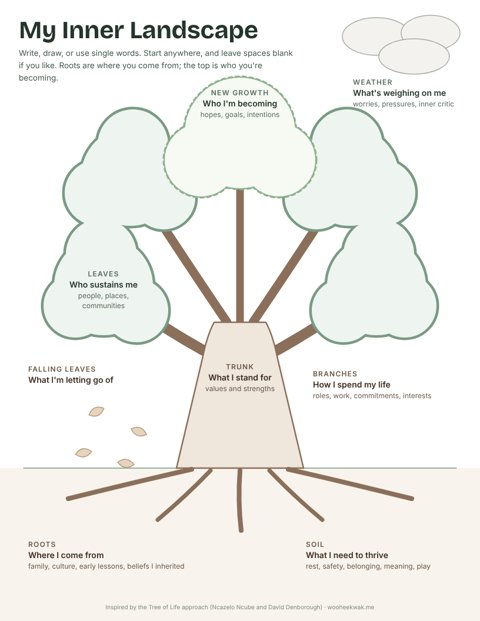
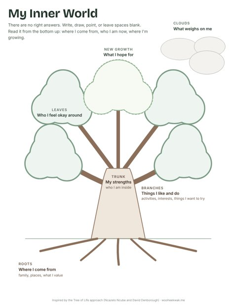

Expressive Arts Worksheets
Visual, hands-on exercises that help clients explore identity, values, and what's shaping their lives. Each one is a conversation starter, not an assessment.
-

Adults · 35 to 40 minutes
My Inner Landscape
A tree map for exploring where someone comes from, what they need, what they stand for, how they spend their life, who sustains them, what weighs on them, and who they're becoming. Especially useful for life transitions, burnout, and identity work.
- Roots
- Soil
- Trunk
- Branches
- Leaves
- New growth
- Weather
- Falling leaves
Draws on expressive arts, narrative practice, and ACT values work
-

Teens · 20 to 30 minutes
My Inner World
A gentle tree map for teens to share where they come from, their strengths, what they enjoy, who they feel okay around, what they hope for, and what's weighing on them. Designed to lower the spotlight for quiet or hesitant teens.
- Roots
- Trunk
- Branches
- Leaves
- New growth
- Clouds
Draws on expressive arts and narrative practice
Client Handouts
One-page psychoeducation guides, each with a diagram, practical strategies, reflection questions, and references. Print one for session, or send the link. Clients can also browse the full library on their own.
Using These with Clients
Invite, don't assign
Offer tools as an experiment. "Want to try this before next time?" leaves room to say no, and a skipped exercise is useful information too.
Follow their meaning
Worksheets and summaries are conversation starters, not assessments. Ask what stood out rather than interpreting answers for them.
Privacy by design
The interactive tools keep everything on the client's device. Nothing is sent to this site. Clients bring results to session, or email them if you've both agreed to that.
Within your scope
Use these alongside your clinical judgment and your practice's policies. They are not crisis tools; share crisis resources (like 988 in the U.S.) as needed.